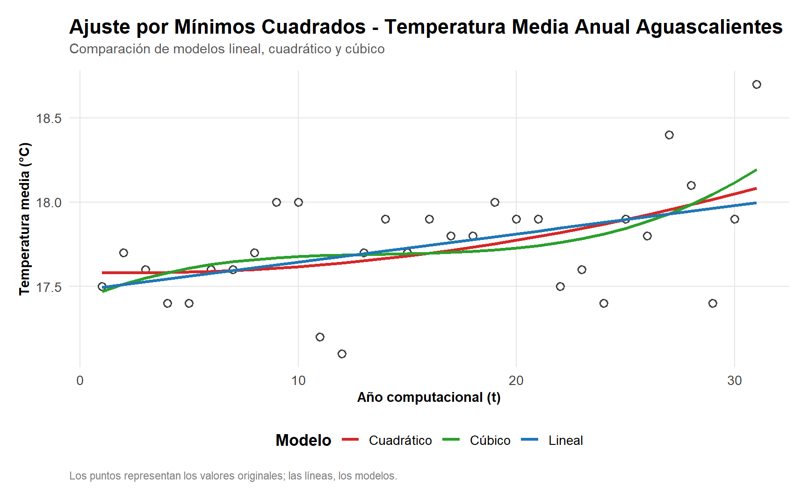

url_base = "https://smn.conagua.gob.mx/tools/DATA/Climatolog%C3%ADa/Pron%C3%B3stico%20clim%C3%A1tico/Temperatura%20y%20Lluvia/TMED/"
anios = 1993:2023
for (anio in anios) {
url = paste0(url_base, anio, ".pdf")
archivo = file.path("Unidad 2. Probabilidad/inputs/pdf/original/", paste0(anio, ".pdf"))
tryCatch({
download.file(
url = url,
destfile = archivo,
mode = "wb",
quiet = TRUE
)
cat("Descargado:", anio, "\n")
}, error = function(e) {
cat("Error en:", anio, "\n")
})
}Ejercicio 3. Ajuste por mínimos cuadrados de la temperatura media anual
Scraping web y generación de archivos Excel
En esta sección se obtienen los datos de origen: los boletines de temperatura media (TMED) del Servicio Meteorológico Nacional (CONAGUA), publicados como un PDF por año. El proceso tiene dos pasos:
- Descargar los PDF de cada año.
- Extraer la tabla de cada PDF y consolidarla en archivos Excel.
Paso 1. Descarga de los PDF
El script define la URL base del SMN y recorre los años de 1993 a 2023. Para cada año construye la URL del PDF y lo guarda en la carpeta inputs/pdf/original/. Cada descarga va dentro de tryCatch(), de modo que si un año falla (por ejemplo, porque el archivo no existe) se imprime un aviso y el ciclo continúa con el siguiente.
Paso 2. Extracción de las tablas y generación de los Excel
Este script lee los PDF descargados y los transforma en tablas de datos. Sus partes principales son:
- Preparación: se listan los PDF y se obtiene el año a partir del nombre de cada archivo (
1993.pdf→1993). Con el PDF de 1993 se toma la lista de estados, que será la base sobre la que se irán uniendo los demás años. - Ciclo por año: con
tabulapdf::extract_tables()se extrae la primera tabla de cada PDF. La columnaAnualse separa en su propia tabla (df_anual), y a las columnas mensuales se les agrega el año como sufijo (por ejemplo,Ene_1993) para distinguirlas entre años. - Un Excel por año: la tabla mensual de cada año se guarda en
inputs/pdf/excel/. - Consolidación: con
left_join()porEstadose van acumulando todos los años en dos tablas anchas: una con los valores mensuales (datos) y otra con los valores anuales (datos_anual). - Salida: ambas tablas se guardan en
outputs/comoHistoricos Temperatura Media Clima.xlsxyHistoricos Temperatura Anual Media Clima.xlsx.
archivos = list.files(path = "Unidad 2. Probabilidad/inputs/pdf/original/", full.names = T, pattern = "\\.pdf$")
anios = basename(archivos) |>
gsub(pattern = ".pdf", replacement = "") |>
stringr::str_squish() |>
as.numeric()
datos = tabulapdf::extract_tables("Unidad 2. Probabilidad/inputs/pdf/original/1993.pdf")[[1]]
datos = datos |>
dplyr::select(Estado) |>
dplyr::mutate(
Estado = Estado |> stringr::str_squish()
)
datos_anual = datos
for (i in 1:length(archivos)) {
cat("Vamos en", archivos[i] |> basename(), "\n")
tabla = tabulapdf::extract_tables(archivos[i])[[1]]
df_anual = tabla |> dplyr::select(Estado, Anual)
names(df_anual)[2] = paste("Anual", anios[i])
tabla = tabla |>
dplyr::select(-Anual)
columnas = tabla |> names()
columnas = columnas[columnas != "Estado"]
tabla = tabla |>
dplyr::rename_with(
.cols = dplyr::all_of(columnas),
.fn = ~ paste0(.x, "_", anios[i]) |> stringr::str_squish()
)
tabla = tabla |>
dplyr::mutate(
Estado = Estado |> stringr::str_squish()
)
tabla |> openxlsx::write.xlsx(paste0("Unidad 2. Probabilidad/inputs/pdf/excel/", anios[i], ".xlsx"))
datos = datos |>
dplyr::left_join(
y = tabla,
by = "Estado"
)
datos_anual = datos_anual |>
dplyr::left_join(
y = df_anual,
by = "Estado"
)
}
datos |> openxlsx::write.xlsx("Unidad 2. Probabilidad/outputs/Historicos Temperatura Media Clima.xlsx")
datos_anual |> openxlsx::write.xlsx("Unidad 2. Probabilidad/outputs/Historicos Temperatura Anual Media Clima.xlsx")Estructuración de datos para trabajar
Los Excel generados en la sección anterior tienen un formato ancho por año (una fila por estado y una columna por cada mes o año). Aquí se reestructuran para que cada fila sea un periodo y cada columna sea un estado, con motivo de poder realizar las operaciones de manera mas sencilla.
Datos mensuales
- Se lee el Excel con los datos históricos mensuales.
pivot_longer()pasa todas las columnas (exceptoEstado) a formato largo: una fila por combinación de estado y periodo (Fecha), con suTemperatura.pivot_wider()regresa a formato ancho, pero ahora con los estados como columnas. Queda una fila por periodo.- Se guarda el resultado como
Historicos Temperatura Media Clima para trabajar.xlsx. - Como verificación, se extrae el año de cada
Fecha(lo que está después del_) y se cuenta cuántos periodos hay por año. Todos deberían tener el mismo número de meses.
datos = "Unidad 2. Probabilidad/outputs/Historicos Temperatura Media Clima.xlsx" |>
readxl::read_excel()
datos = datos |>
tidyr::pivot_longer(
cols = -Estado,
names_to = "Fecha",
values_to = "Temperatura"
)
datos = datos |>
tidyr::pivot_wider(
names_from = Estado,
values_from = Temperatura
)
datos |> openxlsx::write.xlsx("Unidad 2. Probabilidad/outputs/Historicos Temperatura Media Clima para trabajar.xlsx")
# Verificar
datos$Fecha |> sub(pattern = ".*_", replacement = "") |> table() |> sort()Datos anuales
Se repite el mismo procedimiento con el archivo de temperaturas anuales. La diferencia es que aquí la columna Fecha contiene textos como "Anual 1993", por lo que se elimina la palabra "Anual" y se convierte el resto a número. Así Fecha queda como un año numérico (1993, 1994, …). El resultado se guarda como Historicos Temperatura Media Clima Anual para trabajar.xlsx, que es el archivo que se usa en las secciones siguientes.
#############
### Anual ###
#############
datos = "Unidad 2. Probabilidad/outputs/Historicos Temperatura Anual Media Clima.xlsx" |>
readxl::read_excel()
datos = datos |>
tidyr::pivot_longer(
cols = -Estado,
names_to = "Fecha",
values_to = "Temperatura"
)
datos = datos |>
tidyr::pivot_wider(
names_from = Estado,
values_from = Temperatura
)
datos = datos |>
dplyr::mutate(Fecha = Fecha |> gsub(pattern = "Anual", replacement = "") |> stringr::str_squish() |> as.numeric())
datos |> openxlsx::write.xlsx("Unidad 2. Probabilidad/outputs/Historicos Temperatura Media Clima Anual para trabajar.xlsx")Mínimos cuadrados
A partir de aquí el código sí se ejecuta al generar el documento. Se ajustan tres modelos polinomiales a la temperatura media anual de Aguascalientes:
\[ \text{Lineal: } Y = \beta_0 + \beta_1 t \qquad \text{Cuadrático: } Y = \beta_0 + \beta_1 t + \beta_2 t^2 \qquad \text{Cúbico: } Y = \beta_0 + \beta_1 t + \beta_2 t^2 + \beta_3 t^3 \]
donde \(t\) es el “año computacional” (1, 2, 3, …). Los coeficientes se obtienen resolviendo las ecuaciones normales \(A\,\beta = b\), en las que cada entrada de \(A\) es una suma de potencias de \(t\) y cada entrada de \(b\) es una suma de potencias de \(t\) multiplicadas por la temperatura \(y\).
Preparación de los datos
Se leen los datos anuales ya estructurados y se conserva únicamente la columna Aguascalientes, que se renombra como Media. Se crea el año computacional \(t\) (1, 2, …, n) con row_number() y se calculan las columnas auxiliares \(t\cdot y\), \(t^2\cdot y\) y \(t^3\cdot y\), necesarias para el lado derecho de las ecuaciones normales.
datos = "../../outputs/Historicos Temperatura Media Clima Anual para trabajar.xlsx" |>
readxl::read_excel()
datos = datos |>
dplyr::select(Fecha, Aguascalientes) |>
dplyr::rename(Media = Aguascalientes) |>
dplyr::mutate(
`Anio computacional` = dplyr::row_number()
) |>
dplyr::relocate(`Anio computacional`, .after = Fecha)
datos = datos |>
dplyr::mutate(
yt = `Anio computacional` * Media,
yt_2 = `Anio computacional`^2 * Media,
yt_3 = `Anio computacional`^3 * Media
)
head(datos)# A tibble: 6 × 6
Fecha `Anio computacional` Media yt yt_2 yt_3
<dbl> <int> <dbl> <dbl> <dbl> <dbl>
1 1993 1 17.5 17.5 17.5 17.5
2 1994 2 17.7 35.4 70.8 142.
3 1995 3 17.6 52.8 158. 475.
4 1996 4 17.4 69.6 278. 1114.
5 1997 5 17.4 87 435 2175
6 1998 6 17.6 106. 634. 3802. Sumas necesarias
Se calculan el número de observaciones \(n\), las sumas de potencias de \(t\) (de \(\sum t\) hasta \(\sum t^6\)) y las sumas \(\sum y\), \(\sum ty\), \(\sum t^2 y\) y \(\sum t^3 y\). Con estas cantidades se arman todos los sistemas de ecuaciones.
n = nrow(datos)
t_1 = datos$`Anio computacional` |> sum(na.rm = T)
t_2 = (datos$`Anio computacional`^2) |> sum(na.rm = T)
t_3 = (datos$`Anio computacional`^3) |> sum(na.rm = T)
t_4 = (datos$`Anio computacional`^4) |> sum(na.rm = T)
t_5 = (datos$`Anio computacional`^5) |> sum(na.rm = T)
t_6 = (datos$`Anio computacional`^6) |> sum(na.rm = T)
y = datos$Media |> sum(na.rm = T)
yt = datos$yt |> sum(na.rm = T)
yt_2 = datos$yt_2 |> sum(na.rm = T)
yt_3 = datos$yt_3 |> sum(na.rm = T)Modelo lineal
Sistema de 2 × 2. El resultado x_lineal contiene \((\beta_0, \beta_1)\).
\[ \begin{pmatrix} n & \sum t \\ \sum t & \sum t^2 \end{pmatrix} \begin{pmatrix} \beta_0 \\ \beta_1 \end{pmatrix} = \begin{pmatrix} \sum y \\ \sum ty \end{pmatrix} \]
# lineal
A_lineal = matrix(
c(n, t_1,
t_1, t_2),
nrow = 2, ncol = 2, byrow = T
)
b_lineal = c(y, yt)
x_lineal = solve(A_lineal) %*% b_lineal
x_lineal [,1]
[1,] 17.47677419
[2,] 0.01677419Modelo cuadrático
Sistema de 3 × 3. El resultado x_cuadratico contiene \((\beta_0, \beta_1, \beta_2)\).
\[ \begin{pmatrix} n & \sum t & \sum t^2 \\ \sum t & \sum t^2 & \sum t^3 \\ \sum t^2 & \sum t^3 & \sum t^4 \end{pmatrix} \begin{pmatrix} \beta_0 \\ \beta_1 \\ \beta_2 \end{pmatrix} = \begin{pmatrix} \sum y \\ \sum ty \\ \sum t^2 y \end{pmatrix} \]
# Caso cuadrático
A_cuadratico = matrix(
c(n, t_1, t_2,
t_1, t_2, t_3,
t_2, t_3, t_4),
nrow = 3, ncol = 3, byrow = T
)
b_cuadratico = c(y, yt, yt_2)
x_cuadratico = solve(A_cuadratico) %*% b_cuadratico
x_cuadratico [,1]
[1,] 17.5822246941
[2,] -0.0023986247
[3,] 0.0005991506Modelo cúbico
Sistema de 4 × 4. El resultado x_cubico contiene \((\beta_0, \beta_1, \beta_2, \beta_3)\).
\[ \begin{pmatrix} n & \sum t & \sum t^2 & \sum t^3 \\ \sum t & \sum t^2 & \sum t^3 & \sum t^4 \\ \sum t^2 & \sum t^3 & \sum t^4 & \sum t^5 \\ \sum t^3 & \sum t^4 & \sum t^5 & \sum t^6 \end{pmatrix} \begin{pmatrix} \beta_0 \\ \beta_1 \\ \beta_2 \\ \beta_3 \end{pmatrix} = \begin{pmatrix} \sum y \\ \sum ty \\ \sum t^2 y \\ \sum t^3 y \end{pmatrix} \]
# Caso cúbico
A_cubico = matrix(
c(n, t_1, t_2, t_3,
t_1, t_2, t_3, t_4,
t_2, t_3, t_4, t_5,
t_3, t_4, t_5, t_6),
nrow = 4, ncol = 4, byrow = T
)
b_cubico = c(y, yt, yt_2, yt_3)
x_cubico = solve(A_cubico) %*% b_cubico
x_cubico [,1]
[1,] 1.741835e+01
[2,] 5.458013e-02
[3,] -3.782426e-03
[4,] 9.128285e-05Ecuaciones ajustadas
Con los coeficientes obtenidos se calcula el valor ajustado de cada modelo para cada año (ajuste_lineal, ajuste_cuadratico, ajuste_cubico) y se imprimen las tres ecuaciones con los coeficientes redondeados a 4 decimales.
datos = datos |>
dplyr::mutate(
ajuste_lineal = x_lineal[1, 1] +
x_lineal[2, 1] * `Anio computacional`,
ajuste_cuadratico = x_cuadratico[1, 1] +
x_cuadratico[2, 1] * `Anio computacional` +
x_cuadratico[3, 1] * `Anio computacional`^2,
ajuste_cubico = x_cubico[1, 1] +
x_cubico[2, 1] * `Anio computacional` +
x_cubico[3, 1] * `Anio computacional`^2 +
x_cubico[4, 1] * `Anio computacional`^3
)
cat("Ecuación lineal: Y =", round(x_lineal[1,1], 4), "+", round(x_lineal[2,1], 4), "* t\n")Ecuación lineal: Y = 17.4768 + 0.0168 * tcat("Ecuación cuadrática: Y =", round(x_cuadratico[1,1], 4), "+", round(x_cuadratico[2,1], 4),
"* t +", round(x_cuadratico[3,1], 4), "* t^2\n")Ecuación cuadrática: Y = 17.5822 + -0.0024 * t + 6e-04 * t^2cat("Ecuación cúbica: Y =", round(x_cubico[1,1], 4), "+", round(x_cubico[2,1], 4),
"* t +", round(x_cubico[3,1], 4), "* t^2 +", round(x_cubico[4,1], 4), "* t^3\n")Ecuación cúbica: Y = 17.4184 + 0.0546 * t + -0.0038 * t^2 + 1e-04 * t^3Gráficos
Para comparar visualmente los tres modelos con los datos observados, primero se transforma la tabla a formato largo: las tres columnas de ajuste se convierten en una sola columna Ajuste, con una columna Modelo que indica a cuál corresponde (Lineal, Cuadrático o Cúbico).
library(ggplot2)
datos_grafica = datos |>
tidyr::pivot_longer(
cols = c(ajuste_lineal, ajuste_cuadratico, ajuste_cubico),
names_to = "Modelo",
values_to = "Ajuste"
) |>
dplyr::mutate(
Modelo = dplyr::case_when(
Modelo == "ajuste_lineal" ~ "Lineal",
Modelo == "ajuste_cuadratico" ~ "Cuadrático",
Modelo == "ajuste_cubico" ~ "Cúbico"
)
)Comparación de los modelos
El gráfico muestra los valores observados como puntos y cada modelo ajustado como una línea de distinto color.
# Grafico
colores_modelo <- c(
"Lineal" = "#1f77b4",
"Cuadrático" = "#d62728",
"Cúbico" = "#2ca02c"
)
# Si tus niveles de "Modelo" tienen otros nombres, ajusta los names() de arriba
ggplot(datos_grafica, aes(x = `Anio computacional`)) +
# Puntos observados
geom_point(
aes(y = Media),
color = "grey20",
fill = "white",
shape = 21,
size = 2.5,
stroke = 0.8,
alpha = 0.9
) +
# Curvas ajustadas
geom_line(
aes(y = Ajuste, color = Modelo),
linewidth = 1.1
) +
scale_color_manual(values = colores_modelo) +
labs(
title = "Ajuste por Mínimos Cuadrados - Temperatura Media Anual Aguascalientes",
subtitle = "Comparación de modelos lineal, cuadrático y cúbico",
x = "Año computacional (t)",
y = "Temperatura media (°C)",
color = "Modelo",
caption = "Los puntos representan los valores originales; las líneas, los modelos."
) +
theme_minimal(base_size = 13, base_family = "sans") +
theme(
plot.title = element_text(face = "bold", size = 16, margin = margin(b = 4)),
plot.subtitle = element_text(color = "grey35", size = 11, margin = margin(b = 12)),
plot.caption = element_text(color = "grey50", size = 8.5, hjust = 0, margin = margin(t = 10)),
axis.title = element_text(face = "bold", size = 11),
axis.text = element_text(color = "grey25"),
legend.position = "bottom",
legend.title = element_text(face = "bold"),
panel.grid.minor = element_blank(),
panel.grid.major = element_line(color = "grey90", linewidth = 0.4),
plot.margin = margin(15, 15, 10, 15)
)